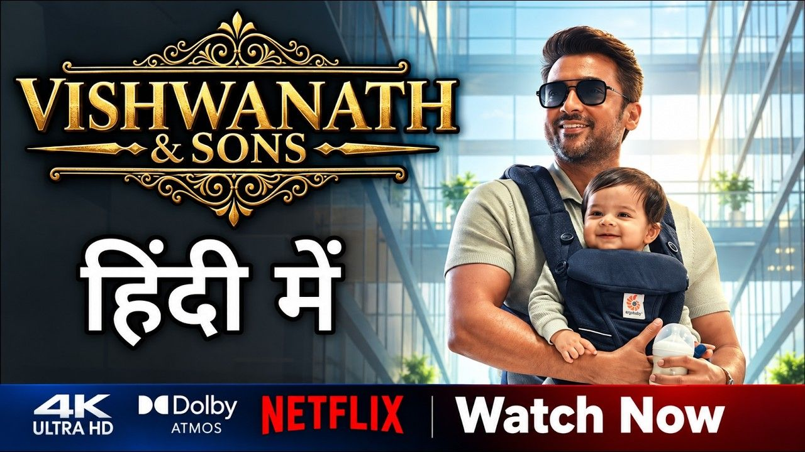

Vishwanath & Sons अब सिनेमाघरों के बाद Netflix पर पहुंच चुकी है, लेकिन OTT रिलीज के साथ फिल्म को लेकर सिर्फ कहानी और स्टारकास्ट की चर्चा नहीं हो रही। Suriya की emotional performance और Mamitha Baiju की natural acting ने दर्शकों का ध्यान खींचा है, वहीं कुछ viewers ने Netflix पर फिल्म की streaming quality को लेकर सवाल भी उठाए हैं।
Suriya और Mamitha Baiju स्टारर Vishwanath & Sons का निर्देशन Venky Atluri ने किया है। फिल्म ने 14 अगस्त 2026 को सिनेमाघरों में दस्तक दी थी और अपनी theatrical journey के दौरान बॉक्स ऑफिस पर मजबूत प्रदर्शन किया। रिपोर्ट्स के मुताबिक, फिल्म ने 25 दिनों के theatrical run के बाद worldwide ₹260 करोड़ से ज्यादा का gross collection किया था। इस आंकड़े की घोषणा फिल्म के makers की ओर से की गई थी और इसे कई प्रमुख entertainment reports ने भी रिपोर्ट किया। 1
अब फिल्म 11 सितंबर 2026 से Netflix पर streaming के लिए उपलब्ध है। Netflix release के साथ इसे Tamil के अलावा Hindi, Telugu, Kannada और Malayalam भाषाओं में भी दर्शकों तक पहुंचाया गया है। यानी जिन लोगों ने फिल्म को theatre में miss किया था, उनके पास अब इसे घर बैठे देखने का मौका है। 2
**Suriya की performance ने फिर खींचा ध्यान**
Vishwanath & Sons की OTT release के बाद शुरुआती audience reactions में Suriya की performance को खास तौर पर सराहा जा रहा है। फिल्म में उनका emotional side कहानी का अहम हिस्सा है और OTT पर देखने वाले कई viewers को उनका यह अंदाज पसंद आया है।

Suriya के साथ Mamitha Baiju की performance को भी positive response मिला है। उनकी natural screen presence और character के साथ उनकी chemistry को viewers की तरफ से appreciation मिल रही है। Latest reactions में दोनों कलाकारों की performances फिल्म के सबसे ज्यादा चर्चा में रहने वाले हिस्सों में शामिल हैं। 3
**लेकिन Netflix पर आते ही OTT Quality को लेकर क्या हुआ?**
फिल्म की performances की तारीफ के बीच कुछ viewers ने इसके streaming presentation को लेकर चिंता जताई है। खास तौर पर HDR और Dolby Vision support को लेकर सवाल सामने आए हैं। यानी कहानी और performances पसंद आने के बावजूद कुछ दर्शकों को OTT पर picture quality वैसी नहीं लगी जैसी वे उम्मीद कर रहे थे। 4
यह बात ध्यान रखना जरूरी है कि streaming quality को लेकर सामने आई प्रतिक्रियाएं सभी viewers की एक जैसी राय नहीं हैं। इसलिए इसे फिल्म की overall quality पर final verdict मानना सही नहीं होगा। अलग-अलग devices, display settings और streaming conditions के कारण viewing experience भी अलग हो सकता है।
**Vishwanath & Sons की कहानी किस बारे में है?**

फिल्म की कहानी Sanjay Vishwanath के इर्द-गिर्द घूमती है। Sanjay एक सफल businessman और Olympic-level athlete के रूप में दिखाया गया है, जिसकी जिंदगी में family, relationships और personal choices के बीच एक बड़ा emotional conflict सामने आता है।
कहानी में family expectations, parenthood और relationships जैसे मुद्दों को commercial entertainment के साथ जोड़ा गया है। यही वजह है कि फिल्म सिर्फ एक typical romantic story तक सीमित नहीं रहती, बल्कि family emotions को भी अपने narrative का हिस्सा बनाती है। 5
**260 करोड़ से ज्यादा का theatrical business भी रहा बड़ा highlight**
Vishwanath & Sons की OTT journey शुरू होने से पहले फिल्म ने theatres में भी अच्छी पकड़ बनाई। NDTV और The New Indian Express की रिपोर्ट के अनुसार, makers ने 25 दिनों के theatrical run के बाद फिल्म के worldwide collection को ₹260 करोड़ से ज्यादा बताया था। 6

यह Suriya के लिए भी 2026 में एक महत्वपूर्ण box-office milestone रहा। रिपोर्ट्स के अनुसार Vishwanath & Sons इसी साल ₹250 करोड़ से ज्यादा worldwide gross करने वाली उनकी दूसरी फिल्म बनी। 7
**अब सबसे बड़ा सवाल—क्या Vishwanath & Sons Netflix पर देखने लायक है?**
अगर आपको Suriya की emotional performances, family drama और relationship-based stories पसंद हैं, तो Vishwanath & Sons की Netflix release आपके लिए दिलचस्प हो सकती है। खासकर वे दर्शक जो theatrical release के दौरान फिल्म नहीं देख पाए थे, अब इसे OTT पर explore कर सकते हैं।
हालांकि, अगर आप फिल्म को बड़े screen और premium picture quality experience के लिए देखना चाहते थे, तो streaming version को लेकर सामने आई HDR और Dolby Vision वाली viewer reactions आपके लिए ध्यान देने लायक हैं। फिर भी यह ध्यान रखना जरूरी है कि ये concerns कुछ viewers की reactions पर आधारित हैं, न कि फिल्म के हर viewer का universal verdict। 8
Vishwanath & Sons की कहानी, Suriya की performance और Mamitha Baiju की screen presence अब theatres के बाद OTT audience तक पहुंच चुकी है। फिल्म की ₹260 करोड़ से ज्यादा की reported theatrical journey के बाद Netflix release ने इसे एक बार फिर discussion में ला दिया है।
अगर आपने इसे theatres में miss किया था, तो अब Netflix पर देखने के बाद आपकी राय क्या होगी—क्या Suriya की performance फिल्म की सबसे बड़ी ताकत है, या OTT presentation में और बेहतर quality की उम्मीद थी?